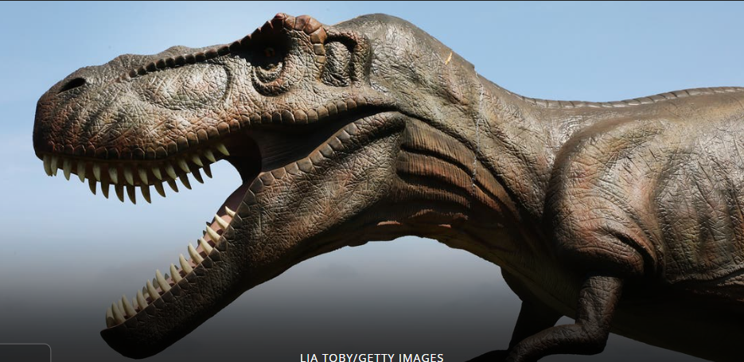

But down there it would be dark now, and not the lovely lighted aquarium she imagined it to be during the daylight hours, eddying with schools of tiny, delicate animals floating and dancing slowly to thir own serene currents and creating the look of a liv painting. That was wrong,in any case . The ocean was a world. And a world is not art. Dorothy thought about the living things that moved in that world: large, ruthless and hungry. Like us up here.